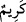
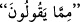

b. Übey gibi zinâkâr erkekleredir. Onların zinâkâr hanımları olur. Yâni bu kadınlar
onlara tahsis olunmuşlardır, neredeyse onlardan başka kimseye nasîb olmazlar. Çünkü
Allah’ın ehil olanları birbirine yönlendiren ve aralarında benzerlikler bulunanları bir
araya getirip kaynaştıran bir meleği vardır.
“Kötü erkekler” pâk olmayan kişiler “ise kötü kadınlara;” çünkü aynı cinsten olmak
bir araya gelip birleşmenin sebeplerindendir. “Temiz” yâni iffetli “kadınlar temiz”
yâni iffetli “erkeklere, temiz erkekler de temiz kadınlara yaraşır.” Öyle ki o erkeklere
neredeyse o kadınlardan başkası nasîb olmaz. Rasûlullah (s.a.) temizlerin en
temizi/iffetlilerin en iffetlisi, öncekilerin ve sonrakilerin en hayırlısı olduğuna göre Âişe
Sıddîka (r.a.)’nın temiz kadınların en temizi olduğu ve onun hakkında uydurulan
hurâfelerin bâtıl olduğu zarûrî olarak ortaya çıkar. Nitekim âyetin devamı da bunu ifâde
etmektedir:
“Bu sonuncular,” şânı yüce olmakla vasfedilenler, yâni ehl-i beyt “(iftirâcıların)
söylediklerinden” yâni ifk ehlinin haklarında söyledikleri boş yalanlardan kıyâmete
kadar bütün asırlarda ve devirlerde “çok uzaktırlar” yâni münezzeh ve pâktırlar.
el-Es’iletü’l-mufhime’de der ki: “İfk hâdisesiyle ilgili âyet Hz. Âişe ve Safvân (r.a.)
hakkında indiği halde nasıl oldu da çoğul bir lafızla zikredildi?” denilirse, şöyle cevap
verilir: Çünkü bu ifk hâdisesi sebebiyle leke, zinânın ârı ve utanç Rasûlullah (s.a.)’e
ulaşır. Çünkü O Hz. Âişe’nin eşidir. Hz. Ebûbekir’e ulaşır. Çünkü onun babasıdır.
Bütün Müslümanlara ulaşır. Çünkü onların annesidir. Onun için hepsi birden çoğul
olarak zikredilmiştir.
“Kendileri için” insan oğlu günahlardan uzak olmadığından büyük bir “bağışlanma
ve” cennette “güzel bir rızık vardır.”
“
” çok demektir. Güzel demek olduğu da söylenir. Kâşifî der ki: “Yâni çok ve
kalıcı kazanç; kasdedilen cennet nimetleridir.” Râğıb da şöyle der: “Kendi alanında
kıymetli ve şerefli olan her şey “kerem” sıfatıyla sıfatlanır. Bazıları ise “güzel rızk”ın
dünyada kimseye minnet ettirmeyen, âhirette de hesâbı/cezâsı olmayan yetecek
miktardaki rızık demek olduğunu söylemiştir.
Fakir (Bursevî) der ki: Âyetlerin sevkinden, özellikle de âyette geçen
“(iftirâcıların) söylediklerinden” anlaşılan mânâ şudur: Kötü söz, yâni yakışıksız ve
hoş olmayan sözler, kötü erkek ve kadınlara mahsus ve onlara lâyıktır. Onlardan başkası
hakkında söylenmesi uygun düşmez. Aynı şekilde erkek ve kadınlardan kötü olanlar,
haklarında kötü sözlerin söylenmesine lâyıktırlar. Güzel sözler, iyi erkek ve kadınlara
lâyıktır. İyi erkek ve kadınlar da haklarında güzel sözler söylenmesine lâyıktırlar. İşte
bu iyi ve temiz insanlar, haklarında kötü insanların söylediklerinden uzaktırlar. Bu
durumda âyetin iniş gayesi Hz. Âişe’nin zinâdan uzak olduğunu bildirmektir.
Bazıları şöyle demiştir: “Kötü sözler kötü erkek ve kadınlara âiddir. Başkalarından
böyle şeyler sâdır olmaz. Kötü erkek ve kadınlar da, münâfık Abdullah b. Übeyy ve ifk
hâdisesinde ona tâbi olan diğer münâfıklar gibi kötü söz söylemeye alışıktırlar. Çünkü